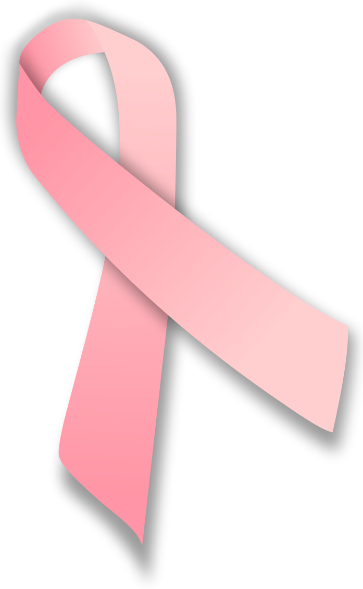
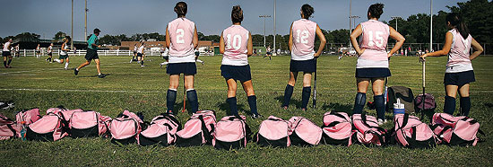
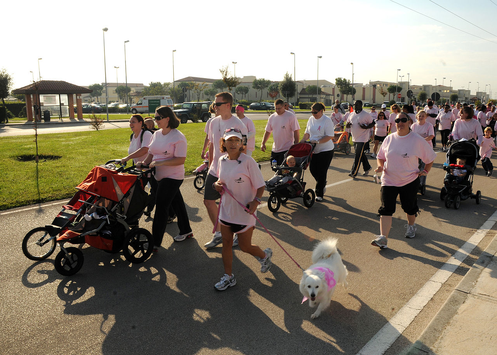
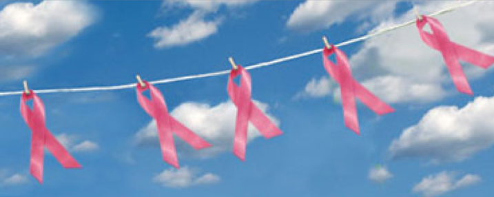

Pinktober
Happy October! We had an extremely successful Childhood Cancer Awareness month- complete with amazing events and fundraising. We are slowly but steadily turning the world gold, and the childhood cancer community should be proud of the strides we are making toward a cure. Of course, it is not enough. 250 kids are still dying every day, and that's not okay. Awareness doesn't stop here - September is over but we are just getting started! That being said, as October rolls in I want to make an important point:
BREAST CANCER AWARENESS IS NOT OUR ENEMY.
Pink is NOT our enemy! It's only 2 days into October, and I can't log into social media without seeing an anti-pink post. This is not helping the childhood cancer community! Breast cancer is a HORRIBLE disease, and it affects thousands of women. A few years ago, the loved ones of those thousands of suffering women rallied together, built a campaign, and raised millions of dollars for research. Their work has paid off- they've saved lots of ta-tas!
That is something to CELEBRATE, not resent.
The women who's lives have been saved are daughters- just like the little girls fighting childhood cancers. They are mothers- just like the mothers who hold their child's hand as they go into chemo and radiation. They are sisters, wives, and grandmothers. (Sometimes brothers, husbands, and grandfathers) Sometimes they are teenagers! All of their lives are important.
Everyone knows what the pink ribbon means, though! Sports teams, restaurants, even children's hospitals are going pink! They've had their success. It's our turn, right?
No.
Breast cancer doesn't have a cure yet. Treatments are still toxic and painful, and they don't always work. Saying that breast cancer doesn't need any more research would be like saying that leukemia doesn't need any more research. How? ALL leukemia has an 85% "survival rate* ", pretty close to breast cancer's 89% "survival rate". Does that mean that we can stop funding research to either of those diseases? No! What would you say to the 15% of children who aren't going to make it past 5 years of diagnosis? Sorry, but your survival rate was pretty high. We had to research other things. You're just the unlucky 15%. What about the kids who live 5 years and then pass away? What about the ones who are killed by heart disease, organ failure, and secondary cancers because of the toxic treatments that "cured" them?
*Survival rates are based off of the patients who live 5 years after diagnosis, not people who are actually "cured".
Childhood cancer definitely needs more research funding. There is no denying that. Our kids are the future. The kids fighting cancer now could be the people who end world hunger, or stop global warming, or explore Mars. This generation is the future, and they deserve to live long, healthy, happy lives. But they're not the only ones who deserve that. In order for children to grow up to be great, they need adults to teach them. We need adults to shape us now, so that we can grow up to do amazing things. My generation may end world hunger, but the people in power now can lay the framework. The next Einstein may be 5 years old, they may be 30 years old. Who are we to decide which life is worth more? Cancer is our enemy in children and adults.
The NIH is certainly disproportionate when it comes to funding cancer research. All childhood malignancies combined recieve only 4% of the cancer budget. That's not enough, and we need to balance it out. But much of breast cancer research comes from private organizations who are raising money on their own. A lot of that money is raised in October, and that's okay.
We could probably take some notes from the breast cancer campaign! The pink movement has been very successful, and we can do the same thing with gold! Instead of envying the streets of pink, lets think of ways to add some gold! After all, the people fighting for breast cancer research and awareness are doing the same things that we are - trying to save the ones that they love. They are fighting the same thing that we are - cancer. We can fight with team pink, or against them. Let's remember who our opposition really is. We are fighting cancer, and we can fight cancer with pink, gold, red, green, purple- whatever. As long as we are all on one team.
When childhood cancer has a cure - and it will - do we want our kids to grow up and be diagnosed with a grown-up cancer that has no cure? No. So let's think pink this October, and go grey in May, and yell yellow in July. Let's fight to make cancer history, not the pink ribbon.
